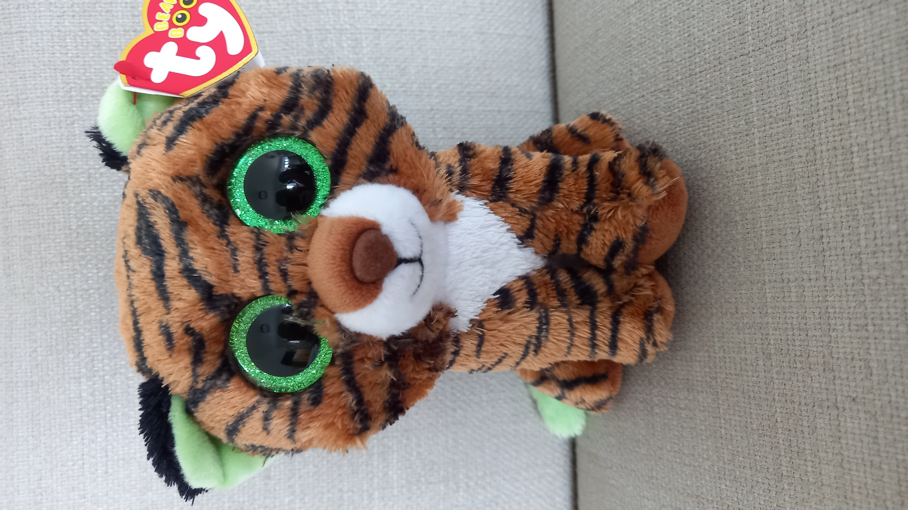

The softest tiger in town, but he can ROAR!
Tiggy was born in 2016, and only started growing his stripes 2 years ago!
He still needs to grow a few more, but he's almost there.
His birthday is April 16 2022.
2. He has a green tip of the tail, and green eyes and ears! This is very rare.
3. He is one of the newest Beanie Boos with a fuzzy nose! (He's from 2019)
He still needs to grow a few more, but he's almost there.
His birthday is April 16 2022.
Fun Facts:
1. He has the biggest roar in his entire class!
2. He has a green tip of the tail, and green eyes and ears! This is very rare.
3. He is one of the newest Beanie Boos with a fuzzy nose! (He's from 2019)